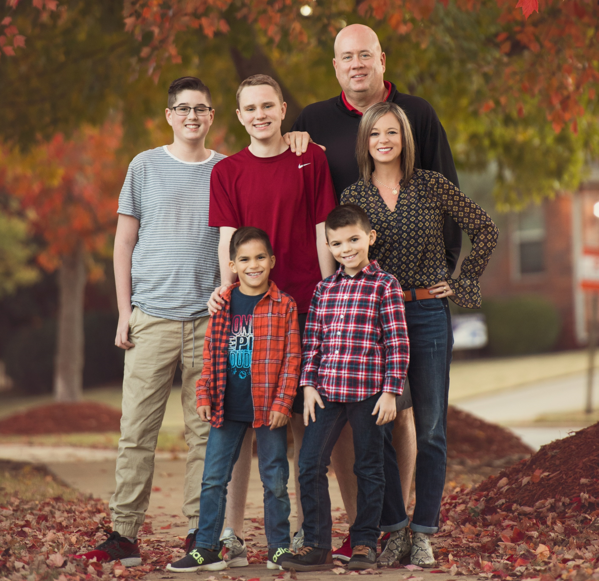
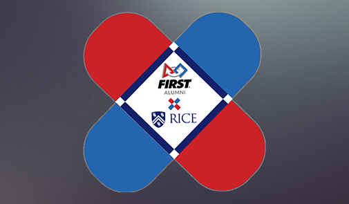
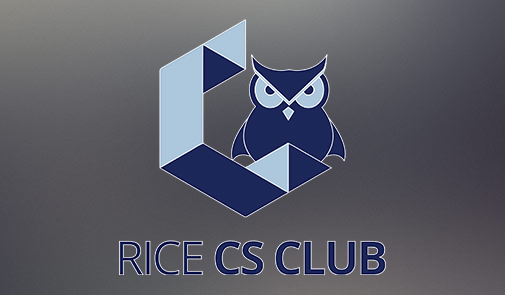

Background
I grew up in Springdale, Arkansas where I lived with both of my parents and three brothers. For high school, attended the Don Tyson School of Innovation. In high school, I found a passion for all areas of STEM, especially computer science and robotics. Most of this passion came from competitive robotics, where I was a part of FIRST Tech Challenge (FTC) team 9879 Root Negative One. My high school robotics career was very successful as in 2019 I won the FTC Dean's List Award and our team won the FTC Houston World Championship.


My extra-curricular activities have continued throughout college. I am currently a Co-President of FIRST at Rice a club that mentors and serves underprivileged and underrepresented teams in the Houston area. As Co-President I am in charge of planning and managing events, leading programming workshops, designing course material, and managing club funds. Additionally, I am a part of the Rice Computer Science club, where I participate in many computer science events. Most recently, my team won the Google Cloud Award at HackRice 11 for our app edYou.
In my free time I like to play video games, hangout with freinds, eat good food, and recently, play racquetball in Rice's intramural racquetball league.
Clubs
Learn more about the clubs I am a part of!

FIRST at Rice
FIRST at Rice allows Rice students who are FIRST alumni to give back by mentoring teams and volunteering at competitions. We are specifically focused on promoting Diversity, Equity, and Inclusion in STEM by supporting underprivileged teams whose members are low-income, minority students in East Texas.
Take me there!

Rice Computer Science Club
An organization dedicated to providing Rice students with a tight-knit community of friends and mentors to promote and advocate computer science and working with tech.
Take me there!